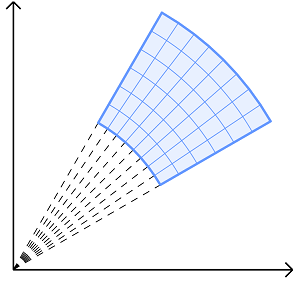
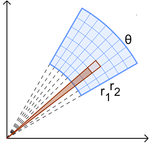
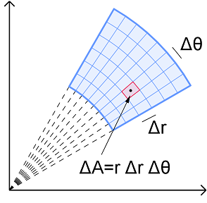

On this page, you will learn to:
- Set up and evaluate double integrals of functions and regions defined in polar coordinates.
The polar coordinate system is useful for describing functions and curves that can be expressed using rotation about the origin. A polar coordinate will have the form \((r,θ)\), where \(r\) is the distance from the origin (a negative \(r\) value would represent a reflection across the origin) and \(θ\) is the angle from the positive \(x\)-axis (a positive value for \(θ\) represents counter-clockwise rotation). Back in Calc II, we learned about the graphs of various polar functions, such as roses, limaçons, and lemniscates.
To evaluate a double integral in polar coordinates, let us first apply the box approximation we looked at earlier. By breaking up a region \(R\) in the \(xy\)-plane into rectangles, we can compute the volume of the box bounded above each rectangle and below a function \(z=f(x,y)\). In the rectangular or Cartesian coordinate system, these rectangles are truly rectangles. But when we switch to polar, the rectangles are shaped slightly differently since we are rotating about the origin.

Notice in the image above how the blue region is divided into polar "rectangles" that are bounded by two opposite sides formed by the radials that are linear (but not parallel) and two opposite sides that are curved (arcs subtending the same central angle). In order to find the volume of the box above these rectangles, we first need to find the areas of each rectangle (we are using the term "rectangle" loosely here to describe the sub-regions in non-polar terms).
First, recall that the sector area formula is \(A=\frac{1}{2}r^2\theta\) where \(\theta\) must be in radians. To find the area of any small polar "rectangle," we could find the difference between the area of the sector of the outer radius and the area of the sector of the inner radius, or \(A = A_{outer} - A_{inner}\).

The area of the polar "rectangle" illustrated above can be determined as follows.
\[ \begin{aligned} A &= A_{outer} - A_{inner} \\[4pt] &= \frac{1}{2}(r_2)^2\theta - \frac{1}{2}(r_1)^2\theta \\[4pt] &= \frac{1}{2}\theta \left( {r_2}^2 - {r_1}^2 \right) \\[4pt] &= \frac{1}{2}\theta \left( r_2 - r_1 \right) \left( r_2 + r_1 \right) \\[4pt] &= \frac{\left( r_2 + r_1 \right)}{2} \left( r_2 - r_1 \right) \theta \end{aligned} \]The fraction \(\frac{\left( r_2 + r_1 \right)}{2}\) represents the average of the inner and outer radii. If we let \(r\) represent this average radius, \(\Delta r\) the change or difference in radii, and \(\Delta \theta\) the change or difference in the angle between the radials, then we can approximate the polar "rectangle" area as \(\Delta A \approx r \Delta r \Delta \theta\). The basically equates to finding the midpoint of each polar rectangle.

Using differentials with infinitely small changes in \(r\) and \(\theta\), we could rewrite this as the equation below.
\[dA = r dr d\theta\]Double Integral in Polar Coordinates: Given a continuous function \(f\) over the polar region \(R\), where \(a\) and \(b\) are the inner and outer radii of \(R\) (or \(a \leq r \leq b\)), and \( \alpha \) and \(\beta \) are the bounding angles of \(R\) (or \(\alpha \leq \theta \leq \beta\)), the double integral of \(f\) over \(R\) can be defined in polar coordinates by the equation below.
\[\underset{R}{\mathop \iint}\, f \, dA = \int_{\alpha}^{\beta} \int_{a}^{b} \, f(r,\theta)\, r \, drd\theta\]Note that due to the cyclical or periodic nature of trigonometric functions rotating about the origin, we must be careful that the bounds \(a\), \(b\), \(\alpha\), and \(\beta\) do not describe overlapping regions. Generally, this often means we want \(r \ge 0\) and \(\beta - \alpha \le 2\pi\). Also, if \(f\) is a Cartesian function of the form \(z=f(x,y)\), then we can convert it to polar coordinates using \(x=r\cos\theta\) and \(y=r\sin\theta\).